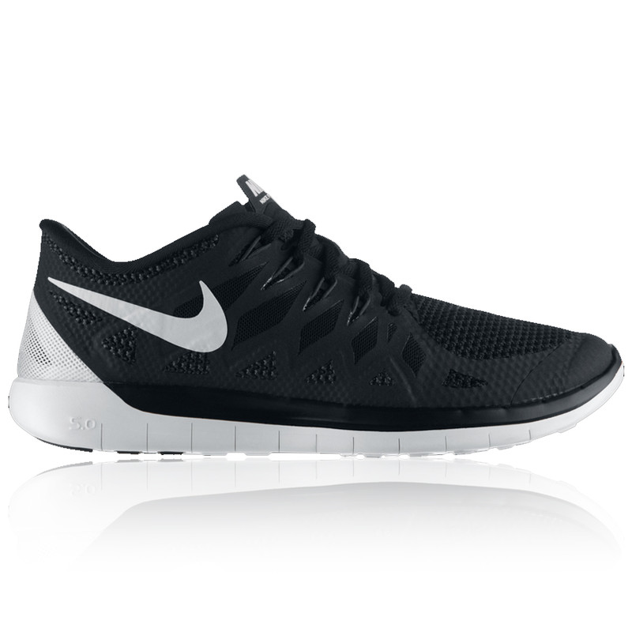

Nike Free shoes are specifically designed to let your feet move more naturally and freely than traditional athletic shoes. Over time, this helps make your feet stronger. But because you’ll be using some muscles in your feet more than you might be used to, it may take some time for them to get used to all that freedom. To give your feet time to adapt, we recommend you transition into using your Nike Free footwear gradually. As you increase the use of your Nike Frees, you may experience some muscle soreness, just like when you exercise other muscles in your body. This shows that your Nike Frees are working. Keep in mind that everyone responds differently, so your progress may be different than others wearing Nike Free. And of course, running and training in any footwear is never without some risk of injury. So listen to your body, your trainer and your physician—and don’t feel bad if you need to stop or rest if necessary. After all, we want you to run Free and train Free—but we also want you to run and train smart.
NIKE FREE ORIGINS After learning that Stanford athletes had been training barefoot on the university's golf course, three of Nike's most innovative and creative employees set out to develop a shoe that felt natural and weightless, similar to bare feet. In 2002, they examined a group of men and women with pressure measuring insoles taped to their feet, using high-speed cameras to capture images of each foot in motion. The team spent eight years studying the biomechanics of shoeless running. The results yielded a profound understanding of the foot's natural landing angle, pressure and toe position, allowing Nike designers to build an unconventional and flexible running shoe from the inside out. Since Nike Free's introduction, millions of runners have trained in the shoe, including some of Kenya's world-class runners.
ULTRALIGHT SUPPORT
The Flyknit upper―a one-piece layer made entirely of polyester yarn―seamlessly integrates areas of stretch and structure, providing ultralight support and a contoured fit. Knit-in Flywire cables cradle the midfoot for enhanced support where you need it most.
EXCEPTIONAL FLEXIBILITY
New hexagonal flex grooves are hot-knife cut into the outsole and wrap around the sidewall so your foot moves more naturally in every direction. Secondary cuts intersect the flex grooves, adding even more flexibility.
NATURAL STRIDE
The heel mimics the shape of the foot, rolling with the ground to promote a more natural footstrike.
6MM OFFSET
With a 6mm difference between heel and forefoot height, the Nike Free 4.0 Flyknit gets you closer to the ground for a more natural feel while still offering a great blend of cushioning and support.
MORE BENEFITS
ref = http://www.nike.com/ca/en_ca/c/innovation/free?ref=http%3A%2F%2Fwww.google.ca%2Furl%3Fsa%3Dt%26rct%3Dj%26q%3Dnike%2520free%26source%3Dweb%26cd%3D1%26ved%3D0CC4QFjAA%26url%3Dhttp%253A%252F%252Fwww.nike.com%252Fus%252Fen_us%252Fc%252Finnovation%252Ffree%26ei%3DylyHVMDIE5esyASRj4HQBw%26usg%3DAFQjCNHbPVQqnQp1rhab7cdOE2L2qOxefQ%26bvm%3Dbv.81449611%2Cd.aWw